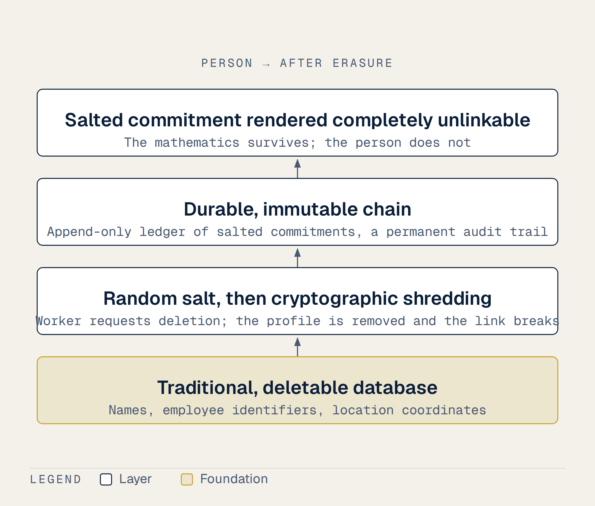
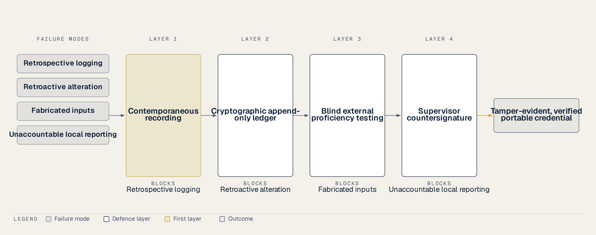

6 What Could Go Wrong
The air in the office is thick with the smell of wet concrete and ozone from the air conditioner. It is four o’clock on a humid Tuesday afternoon, and three of us are gathered around a wooden desk in our provincial CDC laboratory in Vietnam. We are reviewing the latest round of proficiency testing results before we submit them to the national quality center. On the desk lies a printed sheet with rows of figures representing the biochemical analytes from our molecular and analyzer runs. Under the national proficiency testing model, our results will be compared against the peer consensus of fifty-nine other laboratories across the country.
I look down at the tenth column on the paper. Our machine measured a value of one hundred and forty-two. But the preliminary reports from the other provincial units are already circulating on our phones, and everyone else has reported between one hundred and thirty-five and one hundred and thirty-seven. Our figure sits quietly outside that range. It is a clear outlier.
There is a long, heavy pause in the room. Nobody speaks. My supervisor taps his pen against his palm, a rhythmic, dry click that seems to grow louder with every second. He looks at me, then looks back at the sheet. Nobody says anything for a moment. Under a system where quality is audited through peer consensus, being different is dangerous. If we submit this number, our laboratory will be flagged. We will be subjected to administrative reviews, corrective action plans, and quiet blame.
The safest thing to do is very simple. We do not need to accuse anyone. We do not need to make a scene. We just need to look at the sample again. My supervisor gently suggests that we should check the calibration log once more, or perhaps rerun the assay, until our number finally agrees with the crowd. We all know what that means. If we keep looking, we will find a reason to adjust the number. We will align our column with the others so that our laboratory remains safe within the consensus.
This is the silent pressure of the peer consensus trap. We are reviewing nine common analytes across twelve samples, much like the published proficiency testing data compiled by Van and colleagues in 2023. In their study of fifty-nine Vietnamese laboratories, they documented how the overall participant consensus can drift, even diverging from expert reference values. One statement of the evidence position covers this whole chapter, so I will make it here and not repeat it at every step. Nothing proposed below has been tested in a trial. There is no published data on individual-level proficiency testing in Vietnamese provincial laboratories, no evaluation of layered administrative verification against data fraud in that setting, and no trial of point systems or worker-owned registries on laboratory retention anywhere comparable. Every design choice that follows rests on reasoning from adjacent fields and on what the failure modes appear to be, which is a weaker footing than evidence and should be read as such. But in this room, on this rainy afternoon, we do not discuss the literature. We simply stare at the tenth column. I pick up the pipettor. We prepare to look at the sample again, waiting for the number to agree, while the pressure in the room slowly settles over us like the humid air outside. (1,2)
During those long shifts of processing diagnostic samples, I learned that security is never just a matter of code. In this proposal, I must address the most significant technical vulnerability of our entire system. It is a threat that cryptography cannot touch. We are proposing a secure, immutable ledger to record our daily laboratory service history, but we must admit a hard truth. An unalterable registry only guarantees that data has not been changed after it was written. It does not guarantee that the data was true in the first place. A tamper-proof log of fabricated entries is nothing more than a tamper-proof lie. Immutability defends against alteration. It does not defend against false input.
If we ignore this boundary, our advanced cryptographic architecture becomes nothing but expensive theatre. If a technician wants to inflate their work history, they can easily log fictitious assays or claim to have run samples that never existed. The database will happily secure these entries, chain them together with mathematical fingerprints, and anchor them to a trusted timestamp. The resulting credential will be mathematically flawless, yet completely fraudulent. We must not build a high-tech facade that secures empty, fabricated claims.
To prevent this exploitation, we must design verification layers that operate at the physical entry point. The answer does not lie in more cryptography. Instead, we must rely on practical administrative gates that ground our digital entries in physical reality, and they are the same gates named in the layered defence at the end of this chapter rather than a separate list. First, we must implement randomized spot audits. Under this mechanism, independent inspectors physically verify paper laboratory logs against the digital database. Second, every log entry requires a supervisor countersignature. I have to deal with the obvious objection here, because I raised it myself at the start of this chapter: in the scene I described, the supervisor is the person suggesting the number be adjusted. A countersignature from someone who wants the same result is worth nothing. That is precisely why it is the fourth layer and not the first, and why it sits alongside a check the supervisor cannot influence. Contemporaneous capture happens before he sees the figure. The blind proficiency panel is scored outside the building by people who do not know whose result it is. The countersignature adds local accountability on top of those, and it fails in a different way than they do, which is the only reason to have it. Where it does help is the ordinary case, and the ordinary case is most of them: a second pair of eyes on the daily work, providing the external verification that any credible ledger requires. We can look at global precedents like the British surgical e-logbook or the FAA pilot flight logs. These successful models only function because they require external verification by a supervisor or a governing authority. Third, we can use simple, automated checks to flag impossible travel. For example, if our system receives a GPS log from a provincial outbreak site and a physical laboratory check-in from the same technician within the same hour, it must automatically reject both entries (3–5).
Those measures are ordinary administrative hygiene, and none of them has been tested against this problem. None of it has been tested against this problem, per the evidence position stated at the start. We are proposing a practical, low-cost defense system to protect our database’s integrity, but we must evaluate its effectiveness under real-world clinical audits. Without these physical validation layers, our secure database remains completely vulnerable to the threat of fabricated entries. Cryptography without physical verification secures the wrong thing.
What we measure defines how we behave. When we design a system to track and reward performance, we face a well-documented risk. If we make the rewards too high or the indicators too rigid, workers will naturally find ways to manipulate the numbers. The indicators cease to represent quality, and instead become the target itself.
We have clear global evidence of this breakdown. Under performance-based financing schemes in Burkina Faso, healthcare providers falsified registers at scale. Their intense fixation on meeting specific indicators completely displaced the actual clinical objectives those indicators were meant to represent. The paper records became immaculate, but the actual patient care did not improve. We saw the exact same pathology in the English National Health Service under their strict target regimes. To meet administrative deadlines, providers engaged in documented clock stopping and selective referral. They manipulated the timing of admissions and chose patients who were easier to treat just to satisfy the official metrics. This is what happens when we turn a professional mission into a numbers game.
To prevent this systemic failure, we must follow three consensus design rules established by literature. First, we must keep the indicator set small. When we introduce too many measures, we do not get better data; instead, we simply create more unintended consequences and administrative overhead. Second, we must mix process measures with outcome measures. Tracking only outcomes encourages providers to select easier cases, while tracking only process metrics leads to empty compliance. Third, we must carefully size any incentive. The reward must be large enough to motivate our provincial technicians, but it must never be large enough to make systematic gaming rational. We want to encourage honest logging, not creative accounting.
The three rules are borrowed from a literature that never studied a provincial laboratory. This too is reasoning rather than evidence. We do not have randomized controlled trials showing the exact threshold where an incentive becomes too large and triggers fraud. Furthermore, we must acknowledge that when we link verified performance logs to career opportunities like scholarships, we are introducing a powerful motivator. Even with the best design rules, some level of metric displacement remains a constant risk in any system that measures human labor. We must accept this limitation, run regular audits, and keep our expectations realistic. By keeping our technical indicators minimal and rewarding the act of participation rather than speed, we can protect the integrity of our frontline workers.
There is a failure mode here that looks exactly like success. Administrators love to offer training. It is cheap, visible, and easy to document. However, the World Health Organization’s 2018 guideline for community health workers and evidence from programs in Ethiopia, Kenya, Malawi, and Mozambique show a clear pattern. Upgrading professional training while keeping a worker’s actual responsibilities and salary completely unchanged is actively demotivating. It creates deep frustration. When a professional recognition pathway ends in a beautiful paper certificate and nothing else, it is actually worse than doing nothing at all. Still, we must remain completely honest about the strength of this evidence. The World Health Organization openly acknowledges that its global guidelines on health worker career progression are based on research of low or very low quality, meaning we lack robust clinical trials in this space (6–8).
We face a parallel warning from the field of quality assurance and patient safety. In clinical laboratories, we rely on External Quality Assessment, or EQA, to verify our accuracy. But if we use this performance data punitively to rank or punish individuals, we trigger a dangerous behavioral response. The literature on just culture, such as Boysen’s 2013 research and patient safety studies in 2025, shows that a culture of blame drives professionals to hide errors rather than report and correct them. We have hard legal precedents of this purpose drift. Under the United States CLIA regulations, laboratories are legally required to treat proficiency testing samples exactly like patient samples. This law was written because laboratories began treating these test samples with extreme favoritism to secure high scores. High-stakes grading corrupts the metrics we trust (9–11).
To prevent this corruption, our database does not record a personal pass or fail score for individual technicians. That would make the record a tool for surveillance and blame. As noted at the start, no published data exists on EQA at the individual technician level in Vietnam, so any application of personal EQA grading is highly speculative. Instead, we follow a supportive design. The record simply shows that the technician successfully participated in a specific number of external quality assessment rounds under a rotating schedule. If a discrepancy occurred, it documents the formal corrective action they took to resolve it. Documenting honest participation and structured corrective action demonstrates true professional discipline. It encourages transparency instead of fear. By avoiding the dual traps of empty certification and punitive grading, we can build a registry that truly supports our frontline workers. Our technical design must respect these human realities, or the entire system will fail.
In this proposal, we must look closely at how we design the rules for recognizing our technicians’ work. Gamifying work is popular, but consumer research warns us of two major design traps that we must actively reject.
The first trap is status tier demotion, which was documented in marketing research by Wagner, Hennig-Thurau, and Rudolph in 2009, as well as by Drèze and Nunes. Their studies show that demoting someone from an established status level is incredibly dangerous. It leaves the demoted individual with lower loyalty and motivation than someone who never held any status at all. In our CDC, if we strip a technician of their hard-earned professional tier because of a slow month or a temporary drop in sample volume, we will actively destroy their remaining dedication. To avoid this severe behavioral backlash, our system must ensure that once a technician earns a tier, there is either no demotion at all or a clearly signposted recovery window where they can easily restore their standing (7,8).
The second trap is point expiry pressure, which was explored in retail research by Taylor and Neslin in 2005. Forcing accumulated points to expire is coercion-adjacent. It does not motivate genuine, high-quality work; instead, it reliably drives data falsification. When our laboratory staff face a ticking clock that threatens to erase their accumulated record of service, their immediate survival instinct is to game the system to protect their past efforts. This pressure shifts their focus from quality diagnostics to empty compliance. To prevent this systemic failure, we propose that once a technician earns a point for a verified lab action, those points do not expire. They remain a permanent, unalterable part of their professional identity (7,12,13).
These design choices rest on less than I would like. The studies we rely on were conducted on commercial consumers in developed countries, not healthcare workers in low-resource settings, so we face a real translation risk. No trial has measured how point or status systems affect retention among laboratory technicians in developing countries like Vietnam. Furthermore, a major systematic review of gamification by Sailer and Homner in 2020 shows that while cognitive effects can be moderate, the behavioural effects are much weaker, at a Hedges’ g of about 0.25. We also have no independent evidence that digital badges or points translate into official salary increases or career promotion under our current civil service rules. We are borrowing these concepts from commercial marketing to help technicians see their own progress, but we must not overpromise. By rejecting demotion and point expiration, we protect our staff from administrative traps while respecting their dignity (14–16).
One rule about data underlies all of this: immutability is not correctness. When you design a system that cannot be altered, you must design for this reality from the very first day. Genuine human errors will always happen in a busy lab. A technician will inevitably mistype a sample number or log the wrong reagent batch. On an immutable digital ledger, that error can never be edited away. We cannot simply erase our mistakes because doing so would destroy the mathematical audit trail.
Instead, we must solve this using the same logic that accountants have used for centuries. When an accountant makes an error in a ledger, they do not white-out the mistake. They post a reversing entry. Our proposed system uses an append-only architecture where corrections are simply appended as new entries. The new entry contains the correction and supersedes the earlier one, but both remain fully visible in the permanent log. This ensures that the history remains transparent and unbroken, while the current active view shows the corrected state.
However, this absolute permanence creates a direct collision with privacy laws, specifically the right to erasure. Under international frameworks like the European Data Protection Board’s guidelines on blockchain and durable ledgers, finalized in July 2026, technical impossibility is no excuse for failing to erase personal data. If a technician leaves the profession and demands that their history be deleted, an unalterable database would normally violate this law. Putting encrypted or hashed personal details directly on an immutable chain is a compliance violation because those hashes can never be removed from the public ledger (17,18).
We resolve this collision by keeping personal data completely separate from the durable layer. We do not write names, employee IDs, or location coordinates directly into our immutable ledger. Instead, we store all personal identifying details in a traditional, deletable database. On the durable, immutable chain, we only write salted commitments. These are secure cryptographic hashes containing a random salt that looks like noise. If a worker requests the deletion of their records, we simply delete their profile from the external, deletable store. This action immediately renders the salted commitment on the immutable chain completely unlinkable, a process known as cryptographic shredding.

Whether that satisfies a right to erasure in law is genuinely unsettled, and I should not claim otherwise: regulators have not agreed whether a salted commitment left on a public ledger still counts as personal data once the payload is destroyed. The design is built to be defensible on that point, not proven on it. Whether it works in a provincial CDC is a separate question, and unanswered. This privacy-by-design approach is highly logical, but it has not been tested under a real-world clinical or legal audit in our setting. By separating personal data from the unalterable log, we can build a system that respects both data integrity and the law.
I watched our staff work through long nights under intense pressure. When you design a system that records daily laboratory actions to help these frontline workers progress, you must establish an unyielding ethical boundary. In our proposal, we define this boundary as a bright line test that anyone can easily apply. If a technician fully understood how the system gathers, processes, and verifies their data, and would still choose to join, and could leave at any time carrying their data and losing absolutely nothing, then the system is scaffolding. It is a genuine ladder for professional growth. However, if the system only functions because the staff do not understand how it works behind the scenes, or because leaving the platform costs them their accumulated history, then it is a dark pattern. It is an administrative trap designed to exploit them.
When we propose a digital registry to record the field contributions of our technicians, we must establish strict ethical rules written as hard regulations rather than soft sentiment. Each of these rules must be directly traceable to a documented failure in modern workplace technology. We are not designing a game to manipulate our staff; we are building a protective scaffold to respect their dignity.
The first rule is that every score or metric must be completely legible and contestable. Algorithmic management research shows that the core harm of digital tracking is a metric the worker cannot see, audit, or dispute. If our technicians cannot trace how their points are calculated, the system becomes a tool of quiet oppression. The second rule is that the institution must never use these points to set base pay, build rosters, decide promotion, or open a disciplinary file. That prohibition is about who may use the record and for what, and it needs stating carefully, because this book also proposes that the same record open scholarships, which is plainly a career benefit. The two are consistent only if the direction of use is fixed. The record travels outward when the worker chooses to present it, to a scholarship board, a training panel, a future employer. It does not travel sideways into her own management’s hands as an instrument for ranking her against colleagues or building a case against her. The moment her employer can pull the ledger to justify a roster or a reprimand, it stops being voluntary and begins to function as coercive surveillance.
The third rule guarantees data ownership. The worker owns and can export their complete data history, while the provincial organization sees only the high-level aggregates that the worker explicitly chooses to share. The fourth rule is that nobody is ever ranked against anybody else. Systematic reviews among community health workers show that public leaderboards destroy team collaboration and cause deep anxiety among those at the bottom. It is necessary to ban public comparisons entirely. The fifth rule is that exiting the system must be a single, frictionless action that costs nothing already earned. The sixth rule explicitly bans, by name, digital nagging, guilt tactics on a broken streak, confirmshaming, and obstructed exit paths. If a technician misses a week of entries due to an exhausting night shift, the system must not punish or shame them.
The seventh rule is that rewards must attach strictly to documentation and participation, and never to clinical outcomes or processing speed. Rewarding clinical outcomes or speed invites both data gaming and dangerous patient selection, as seen in historical gaming failures within the British NHS. The eighth rule is that we must never escalate reward sizes to buy artificial uptake. A classic workplace wellness trial published in the Quarterly Journal of Economics in 2019 found that larger incentives mostly ended up paying those who were already highly engaged, which skewed the sample and failed to change behavior. Finally, the ninth rule requires that a qualified human sits in every consequential decision, with all system overrides transparently logged. (13,19)
These conditions are drawn from settings very unlike ours. The principles are well documented in the international labour and behavioural literature, but no trial has evaluated how they apply to preventive health workers in low-resource Vietnamese settings. We are proposing a logical, evidence-informed framework. By writing these ethical laws into our software, we ensure our registry remains a ladder of opportunity rather than a tool of exploitation.
A single error is rarely what breaks a system. When we analyze how public health monitoring fails, we must look at the framework that holds our entire design together. This is the Swiss cheese model of accidents. In this model, every layer of defense has holes in it, much like a stack of sliced cheese. A single error usually passes through one hole without causing any harm. Disaster happens only when the holes in successive layers happen to line up perfectly, allowing a hazard to strike. The most important thing this model tells us is not that somebody made a mistake. Instead, it shows how everyone involved can believe they are doing the right thing, while the system still carries them toward a fatal outcome. This is exactly the trap we see when an entire peer group drifts together, and the only accurate laboratory becomes the one that looks wrong because it sits outside the consensus.
The corresponding discipline from industrial safety is to isolate a hazard and then verify that isolation rather than merely assuming it. This is the exact same instinct as sending a blind, unannounced sample to a laboratory to test its accuracy, rather than simply asking the operators how they are doing. External quality assessment and proficiency testing must act as this blind, independent check.
What follows for this proposal is clear. No single layer of defense is being offered as sufficient on its own. Instead, we propose a series of independent layers. Recording data at the exact moment of work is the first layer, preventing the common practice of retrospective logging. Immutability, secured through cryptographic append-only ledgers, is the second layer. Recorded history cannot then be altered after the fact. External verification through blind proficiency testing is the third layer. I have to be careful about what it catches, because an earlier draft of this chapter said it prevents the fabrication of inputs, and that is a category error I would rather correct than defend. A proficiency panel arrives a few times a year with a handful of coded specimens. It establishes that this laboratory, tested without knowing it was being tested, could actually perform the assay. It says nothing whatever about whether fifty runs logged on a Tuesday morning ever happened. A technician can pass every panel for five years and still invent a day’s work, and no amount of blind testing would notice.
What the third layer defends against, then, is analysis that cannot be trusted, which is a real failure and a different one. Fabricated volume is defended against elsewhere, and it is worth saying exactly where, because this is the thinnest seam in the whole design. Three things bear on it. The instrument’s own telemetry is generated by the machine rather than claimed by the operator, so a run that never occurred leaves no cycle record. Consumables reconcile against runs: fifty reactions consume fifty reactions’ worth of reagent and fifty tubes, and a laboratory that logs work it did not do will show a stock ledger that does not balance. And randomised spot audit compares the digital record against the physical worksheets and specimen receipts for a date chosen after the fact.
None of the three is strong alone. Telemetry can be run on empty tubes. Stock records can be adjusted by the same people. Spot audits are only as independent as the auditor. Their value is that defeating all three at once requires coordination across the laboratory, the store and the inspectorate, which is a materially harder thing to arrange than typing a number into a form. That is the honest claim: fabrication is made expensive and conspicuous, not impossible. A supervisor countersignature is the fourth layer, establishing clear local accountability. The value of this design lies in these layers being completely independent of one another, rather than in any single layer being exceptionally strong. An unalterable record of something that never happened is still a lie, and now a permanent one.

One last boundary. The registry as a whole remains untested for its effect on reporting accuracy or staff retention in low-resource public health laboratories. Furthermore, no system in the world has ever successfully converted individual-level proficiency testing into a portable, personal professional credential. We are proposing a logical, evidence-informed twelve-month pilot to test these behavioral and technical designs. By piling these independent, imperfect layers on top of one another, we can build a secure pathway that keeps our frontline workers safe and our health security intact.